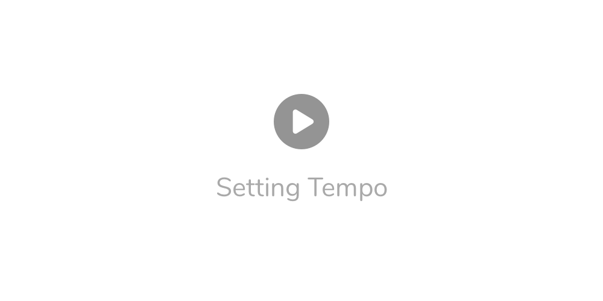
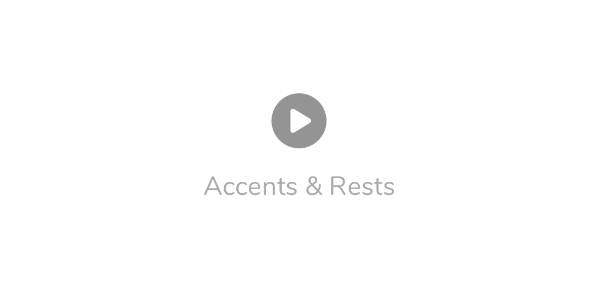
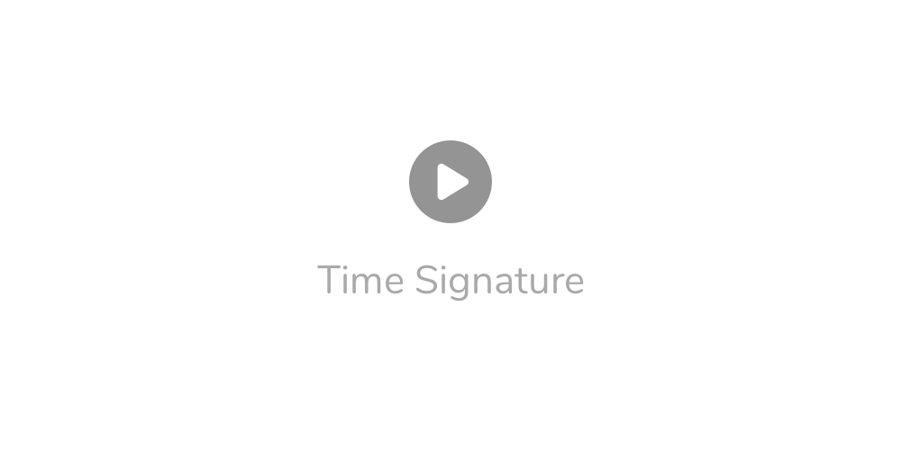
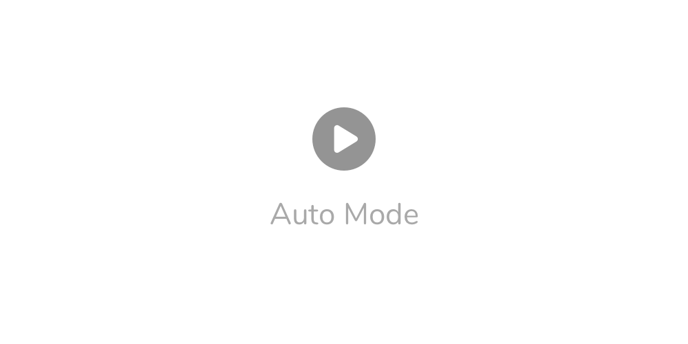

Setting Tempo
- Click arrows to change, click and hold to scroll.
- Click and scrub the tempo number vertically.
Up / Down arrow keys change by 1 bpm, Left / Right change by 5 bpm. Press Enter to type an exact value.- Click the TAP button or
T / Backspace on a keyboard at least three times in a row.

Subdivisions
- Click on notes to cycle through subdivisions.
Accents & Rests
- Click small buttons below notes to add an accent or rest.
- Right-click on notes to quickly add accent to the first subdivision.

Time Signature
- Click on the time signature to reveal available options.
- For 5/8 and 7/8, click the button below the time signature to cycle through different groupings.

Auto Mode
- Auto mode has two variants: one mutes metronome clicks, the other increases or decreases tempo.
- Press the AUTO button or
A to activate.
- Change modes by clicking on MUTE/ADD/BAR/SEC labels.
- Change values by clicking and typing or scrubbing numbers vertically.

Sounds & Volume
Spacebar to start and stop metronome.- Drag slider or press
Cmd plus arrow keys to adjust the volume.
M to mute.- You'll find a list of sounds from Settings and from the menu.
O cycles through sounds.- There's a pan option in Settings and from the menu.
Presets
- There are 9 memory slots to save the tempo, signature and divisions into.
S saves the current preset.Cmd+1 .. Cmd+9 save current settings as another preset.1 .. 9 loads a preset.P cycles through presets.
Display Options
- Tempomate prevents your computer from entering sleep mode while the metronome is playing.
- You can also prevent the display from turning off from Settings or from the application menu.
Cmd+T forces the window to float on top of others.
L toggles click light.F enters or leaves full-screen mode.- You can resize the window.
You'll find many options also from the application menu. Happy practising!